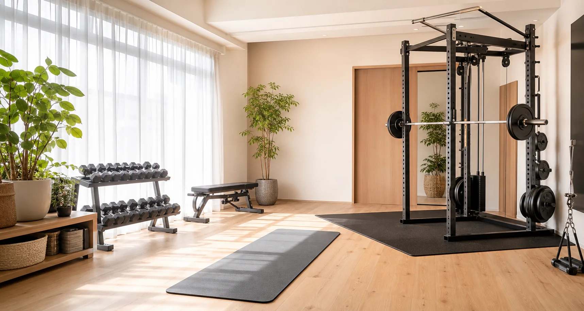

女性トレーナーが毎回担当
膝や腰に不安がある場合は、毎回その日の状態を確認してから種目を決めます。痛みがある日は、負担のない内容に変更します。
毎回同じ女性トレーナーが担当します。運動経験は問いません。完全予約制。
無料体験を申し込む
無料体験60分／勧誘はありません
入会されない場合も、その日のアドバイスはお持ち帰りいただけます
それは、意志の問題ではありません。40代の体に合った方法があります。
セッションはすべて、同じトレーナーが担当します。
佐藤 美咲 TRAINER
NSCA-CPT ／ 健康運動実践指導者
これまで、自己流の食事制限やジム通いが続かなかった方のサポートを多く行ってきました。40代以降は、若い頃と同じやり方をそのまま続けるのではなく、体力や生活リズムに合わせて方法を見直すことが大切だと考えています。
担当が変わらないため、前回の内容や体調を毎回説明し直す必要がありません。食事も運動も、毎日完璧にできなくて大丈夫です。現在の体調や普段の食事を確認し、続けられる形を一緒に考えます。
膝や腰に不安がある場合は、毎回その日の状態を確認してから種目を決めます。痛みがある日は、負担のない内容に変更します。
最後の1ヶ月は、自宅でも続けられる内容に切り替えます。3ヶ月後に通う回数を減らすことも、続けることも選べます。
食事の写真を送っていただくと、翌日までにお返事します。糖質をゼロにするのではなく、食べる順番や量の調整からお伝えします。
食事サポート／月額5,500円（税込）のオプションです
食べたものを写真で送っていただくと、翌日までにお返事します。献立を作り直す必要はありません。今の食事のまま、量や順番を調整できるところをお伝えします。
※掲載例として作成したデモ用の画面です。
目標、生活リズム、運動経験、膝・腰など気になることを伺います。
姿勢や体の動きを確認し、今の状態を一緒に把握します。
初回は自分の体重で行う種目から始めます。器具を使った種目は、動きを確認してからご案内します。
料金、回数、予約方法、条件を分かりやすくご説明します。
持ち物：動きやすい服・飲み物／ウェア・シューズは各330円でレンタルできます
無料体験を申し込む3ヶ月を目安に、ご自身で続けられる状態を目指します。その後は、通う回数を減らすこともできます。
食事サポート：月額5,500円（税込）／毎日のLINE食事相談
追加費用：水 無料／ウェア・シューズレンタル 各330円（税込）
お支払い：現金・各種クレジットカード・分割払い（条件はご相談ください）
回数券について：月ごとの回数を決めずにご利用いただける分、1回あたりの単価が上がります。
有効期限：回数券の有効期限は6ヶ月です。使い切れなかった分は返金します。
プラン変更：月4回・月8回プランからメンテナンスプランへの変更は、次回決済日の7日前までにお申し出ください。手数料はかかりません。
以前もジムに入会しましたが、何をすればよいか分からず続きませんでした。毎回同じトレーナーさんなので、小さな変化も相談しやすいです。食事も「これは食べていいですか？」とLINEで聞けるので、自己流で悩む時間が減りました。
膝に不安があり、激しい運動は無理だと思っていました。体験で動きを確認してから始められたので安心でした。無理をさせるのではなく、その日の状態に合わせて進めてくれるのが自分には合っています。
夜の食事を抜くようなダイエットは続きませんでした。食事の写真を送ると、次の食事で調整できることを教えてもらえます。完璧にできない日も相談できるので、前より気持ちが楽です。
※掲載例として作成したデモ用の文章です。実案件では、許諾を得た実在のお客様の声に差し替えます。
はい。初回に状態を確認し、今の体力に合わせてご案内します。けがや通院中の症状がある場合は事前にご相談ください。
いいえ。料金・内容・条件をご確認いただいたうえで、ご自身に合うと感じた場合にご検討いただけます。無理な勧誘はありません。
毎日のLINE食事相談をご用意しています（食事サポート／月額5,500円）。食事の写真や迷ったときの質問に、担当トレーナーがお答えします。
動きやすい服と飲み物をご用意ください。ウェア・シューズは各330円でレンタルできますので、手ぶらでもお越しいただけます。
体調や症状を事前に伺い、負担のない範囲でご案内します。医師から運動を控えるよう言われている場合や、症状が強い場合は、事前に医療機関へご相談ください。
ご予約時と体験時にお知らせください。状態によってはトレーニングを控える、または医師への確認をお願いする場合があります。
月額プランは次回決済日の7日前までにお申し出ください。回数券の取り扱いを含む詳しい条件は、入会前に書面でご案内します。
個人差があります。体質・生活リズム・開始時の状態によって、必要な期間は変わります。3ヶ月で変化を感じる方もいれば、より時間をかける方もいます。無理なく続けられる方法を一緒に考えます。
ご自身で続けられる状態を目指します。月2回のメンテナンスプラン（16,500円）に切り替える方もいれば、そのまま継続される方もいます。プラン変更の手数料はかかりません。
無理な勧誘はありません。体験後に料金とプランをご説明し、ご自身でご検討いただけます。

友だち追加後、「体験希望」または「チェックリスト希望」とメッセージをお送りください。
無料体験60分／勧誘はありません